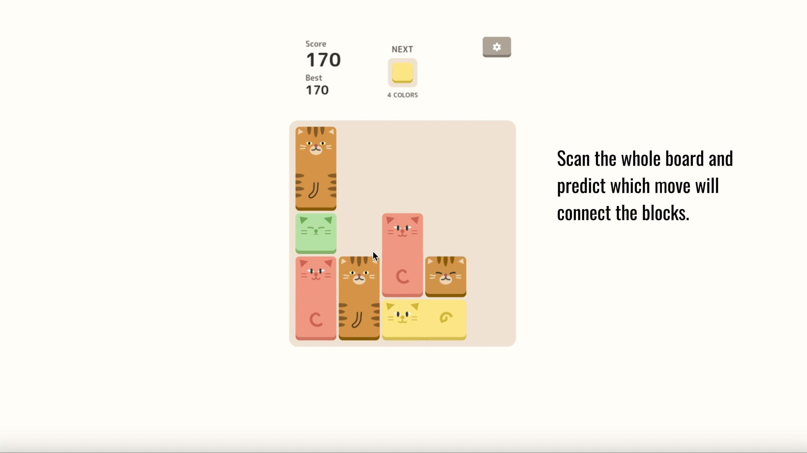
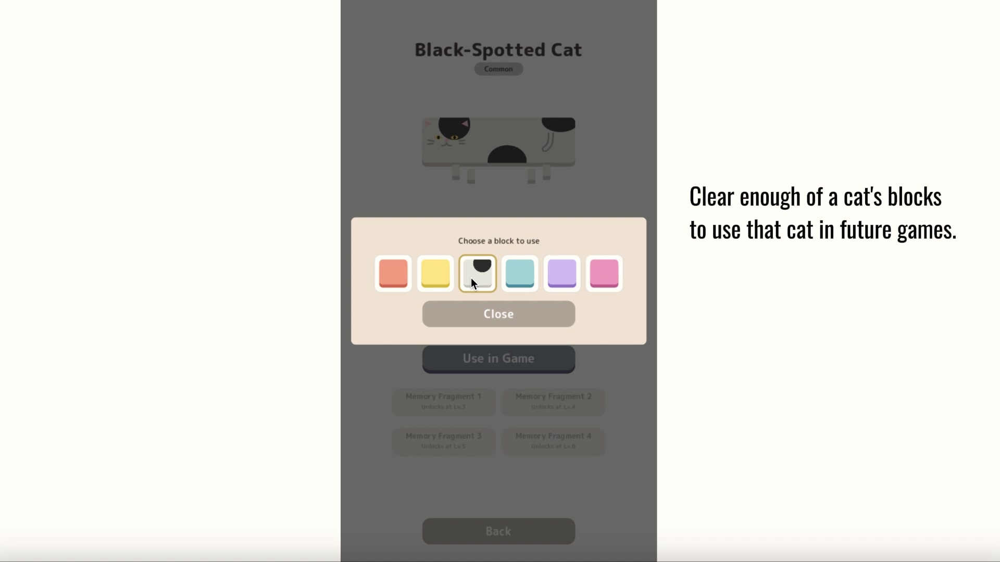
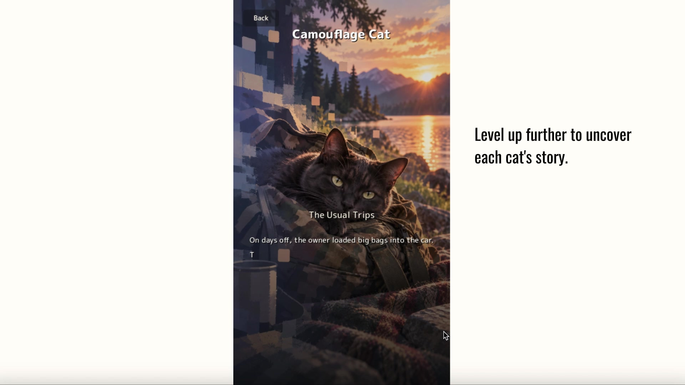
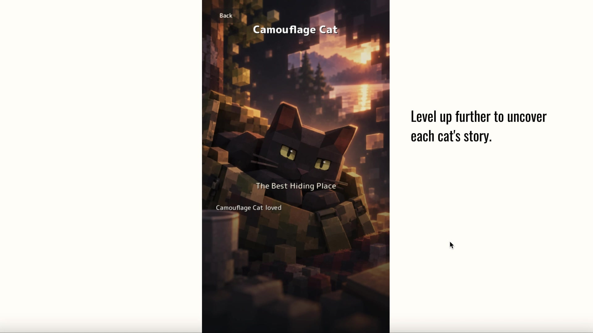

Swipe
Move every block up, down, left, or right at the same time.
A puzzle with no time limit—and cats to discover.
Move every block at once, anticipate what comes next, and build connections across the whole board. Each run reveals new cats, new challenges, and fragments of their stories.
Play in your browser—no download required.
Currently in development.

There is no timer. The challenge comes from reading the board, predicting how every block will move, and preparing connections before space runs out.
Every swipe changes the entire board. A move that clears blocks now may create—or close off—the next opportunity.
Move every block up, down, left, or right at the same time.
New blocks enter from the opposite side in random positions.
Join four or more blocks of the same color to clear them and score.
New colors appear as the score rises, increasing the puzzle’s complexity.
Clearing blocks is also a way of getting to know the cats that inhabit CellCats.

Clear enough of a cat’s blocks to befriend it, add it to your collection, and use it in future games.

Deepen each relationship to unlock memory fragments and gradually reveal the cat’s story.

The stories are intended to evoke issues affecting cats today while expressing the bond between cats and people. The bright, playful puzzle world and the quieter world of memory are designed to give each other emotional weight.
I care deeply about cat welfare. In the future, I hope to use a portion of the game’s revenue to support organizations working to protect and rescue cats.
Koji Takamiya is a Tokyo-based independent developer and freelance game and digital-content planner and project manager.
CellCats is a solo indie project that brings together his experience in game planning and production management with a long-standing interest in cats and character design.
Current status: playable prototype in development
Planned full release: 2027